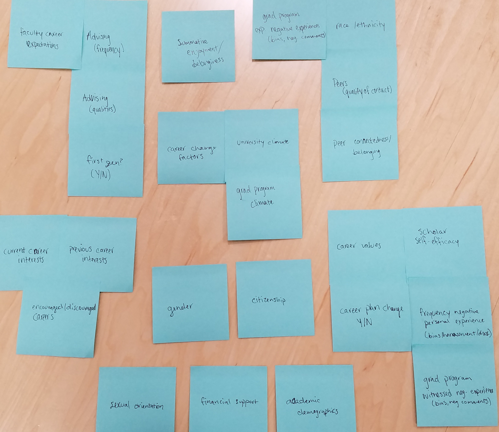
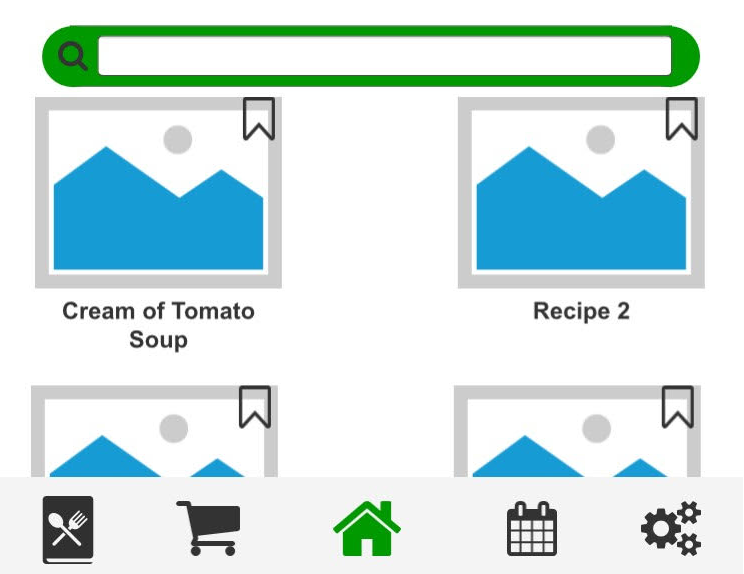

Kaitlyn Ouverson
Home
CIRTL
ARL User Testing
Voting Machine Usability
Lazy Suzan App
Boeing SCDP
Digital A11y Redesign
Resume
About Me
Hi! I'm Kaitlyn
Experimental psychologist and user experience researcher with a passion for collaborative experiences,/br>
Data Visualization for CIRTL
User Testing with the Army Research Laboratory
Boeing SCDP Project Management
LazySuzan: User-Centered Design
Usability Testing for a Voting Machine Company
User-Centered Redesign of Digital Accessibility Website
 User Testing with the Army Research Laboratory
User Testing with the Army Research Laboratory Boeing SCDP Project Management
Boeing SCDP Project Management User-Centered Redesign of Digital Accessibility Website
User-Centered Redesign of Digital Accessibility Website